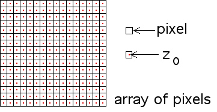

Pixels
| Although mathematically we can speak of all complex numbers z0 in the plane, in practice we consider only some portion of the complex plane (the window in which the picture is rendered). |
| Because on a computer monitor it is represented as an array of pixels, in this window we take only a finite collection of z0. |
| Pictures cannot be resolved at a level smaller than a pixel, so for each pixel we take one point z0, usually the center of the pixel. |
|  |
| A 200 × 200 window requires testing 2002 = 40,000 pixels. |
Return to Julia sets.